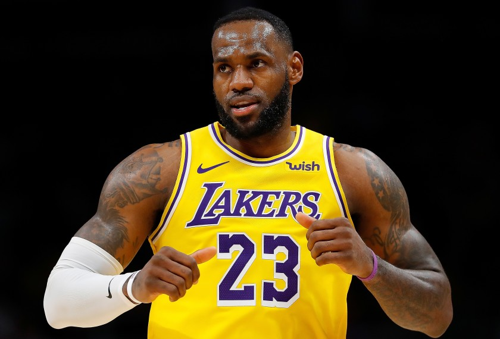

Przed sezonem 2010/11, opuszczając drużynę z Cleveland, w której grał od początku kariery, podpisał
czteroletni kontrakt z Miami Heat[4], tworząc gwiazdorski tercet wraz z Chrisem Boshem oraz Dwyane’em
Wade’em. W sezonie 2010/2011 w Meczu Gwiazd w LA zaliczył drugie w historii tego Meczu triple-double
(pierwsze osiągnął Michael Jordan)
